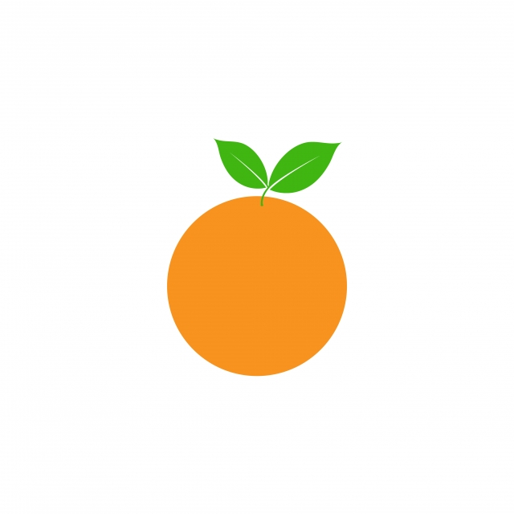

Jeruk

Jeruk adalah buah dari berbagai spesies citrus dalam
famili Rutaceae terutama mengacu pada Citrus × sinensis, yang
juga disebut jeruk manis, untuk membedakannya dari
Citrus × aurantium terkait, yang disebut jeruk pahit. Jeruk
manis bereproduksi secara aseksual (apomiksis melalui
nucellar embryony); varietas jeruk manis muncul melalui mutasi.
Jeruk adalah hibrida antara jeruk bali (Citrus maxima) dan
mandarin (Citrus reticulata). Genom kloroplas, dan karena itu
garis ibu, adalah jeruk bali. Jeruk manis telah memiliki genom lengkap
yang diurutkan.
Jeruk berasal dari wilayah yang meliputi Tiongkok Selatan, India Timur
Laut, dan Myanmar, dan penyebutan jeruk manis paling awal adalah dalam
literatur Tiongkok pada 314 SM. Hingga 1987, pohon jeruk ditemukan
sebagai pohon buah yang paling banyak dibudidayakan di dunia. Pohon
jeruk banyak ditanam di iklim tropis dan subtropis untuk buahnya yang
manis. Buah jeruk dapat dimakan segar, atau diolah untuk jus atau
kulitnya yang harum. Hingga 2012, jeruk manis menyumbang sekitar 70%
dari produksi citrus.
Pada 2019, 79 juta ton jeruk ditanam di seluruh dunia, dengan Brasil
memproduksi 22% dari total, diikuti oleh Tiongkok dan India.
Khasiat Jeruk
- Mengatur tekanan darah tinggi
- Mencegah kanker
- Mencegah penyakit jantung
- Memurnikan darah
- Mencegah penyakit ginjal
- Membantu mencegah asma
Daftar Harga
| Jenis Jeruk | Harga | |
|---|---|---|
| Per Kilo | Per Buah | |
| Jeruk | 50k | 5k |
| Jeruk | 60k | 6k |
| Jeruk | 70k | 7k |
| Jeruk | 55k | 5.500 |